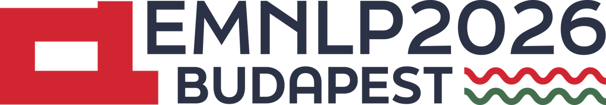
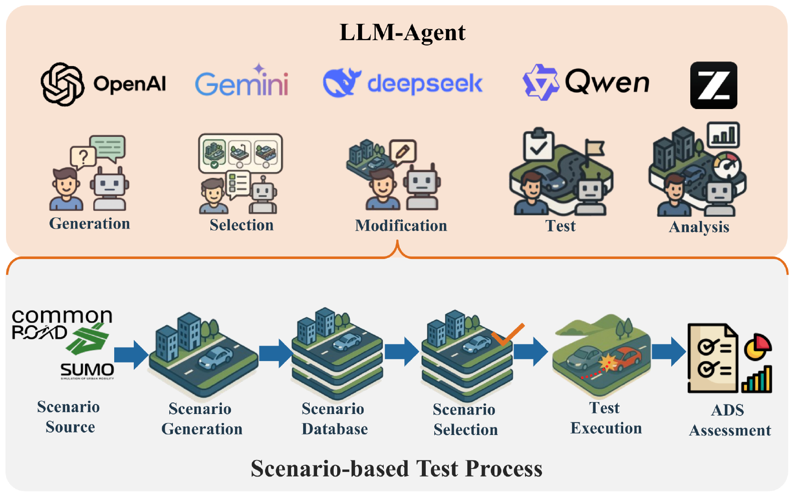

Main ConferencePlannerForge: LLM Agents for Scenario-Based Testing of Motion Planners in Autonomous Driving
An LLM-agent framework that extends all scenario-based testing stages — from Scenario Generation to ADS Assessment — and adds two further LLM-enhanced stages: ADS Enhancement and ADS Benchmarking.
 Dataset
Dataset

Stages 1–6 follow the Riedmaier scenario-based-testing taxonomy; + marks the two LLM-era stages introduced by PlannerForge.
Key Contributions
- End-to-end LLM framework. To our knowledge the first framework to unify all six Riedmaier scenario-based-testing stages together with two LLM-era stages (ADS Enhancement, ADS Benchmarking) in a single chatbot-driven pipeline.
- Empirical evaluation. Ten off-the-shelf LLM backends (five commercial, five open-source; reasoning and non-reasoning) across the five core framework tasks under five prompt conditions — without any domain-specific fine-tuning.
- Cross-planner benchmark. A multi-planner interface (Frenetix and MP-RBFN) for comparative evaluation on framework-generated and -modified scenarios.
Abstract
Ensuring autonomous-driving safety is a critical challenge. Scenario-based testing is the systematic process used to validate autonomous-driving systems (ADS), but it remains a fragmented modular pipeline in which scenario generation, retrieval, modification, ADS execution, and result analysis are performed by separate tools with little interaction. LLM agents have shown promise across ADS sub-systems such as perception, planning, and control; however, to our knowledge no prior work covers this scenario-based testing pipeline for ADS as a single LLM-agent framework. We present PlannerForge, an LLM-agent framework that extends all six scenario-based-testing stages (Scenario Generation through ADS Assessment) with two further LLM-era stages, ADS Enhancement and ADS Benchmarking, and integrates two open-source motion planners (Frenetix and MP-RBFN) under a unified interface. We evaluate PlannerForge with ten off-the-shelf LLMs across the five framework tasks under five prompt conditions; best-per-task scores reach 0.88–1.00, with open-source 20–35B backends matching commercial APIs on most tasks. Open-source models such as Qwen3.6:35B match commercial APIs on three of the five tasks. Chaining the modules end-to-end retains 83% / 78% of seed queries (commercial / open). It outperforms Scenario Factory 2.0 on natural-language generation (193 vs. 144 executable of 200) and realises 92–96% of requested city, road and vehicle attributes. It outperforms BM25 at rank 1 selection (92.0% vs. 67.5%) and From-Words-to-Collisions on physically valid edits (≥94% vs. 31%). At N = 400, cost-tuning lifts planner success from 50.4% to 70.2% and cuts collisions from 19.0% to 8.4%, without domain-specific fine-tuning.
(5 open · 5 commercial)
System Demonstrations
Seven natural-language workflows, driven end to end through the PlannerForge chatbot. They follow the pipeline in order — generate a scenario from a text query or from a map input, select one from the database, modify it, execute it in the motion planner under test, assess the results, then enhance the planner itself. Every clip is a single uncut session; press play on any stage.
Scenario Generation (Text)
Generation ModuleFrom a single natural-language text query — a place, the desired traffic, and the ego role — PlannerForge geocodes the location, builds the road network, populates traffic, and renders a runnable CommonRoad scenario.
Scenario Generation (Map)
Generation ModuleDriven by a map input instead of a place name — the user supplies the map, and PlannerForge builds the road network from it, populates the traffic and ego role described in the prompt, and renders a runnable CommonRoad scenario.
Scenario Selection
Selection ModuleThe chatbot retrieves a matching scenario from the database by description — location, road type, obstacles, and dynamics — and returns the best-ranked candidates.
Scenario Modification
Modification ModuleA natural-language edit — rerouting a vehicle, adding or removing traffic, changing driving behaviour, or moving the ego goal — is applied to a selected scenario and re-simulated. The clip also shows single-scenario motion-planner testing, comparing the planner's result before and after the ego-goal modification.
Test Execution
Test ModuleThe chatbot runs a scenario through an integrated motion planner (Frenetix or MP-RBFN) and plays back the resulting ego trajectory, surfacing the planner's behaviour and outcome for the scenario under test.
ADS Assessment
Analysis ModuleThe chatbot assesses the motion planner's results — batch simulations over scenario sets, success and collision statistics, and failure-reason breakdowns — and answers questions about the planner's performance in natural language.
ADS Enhancement
LLM-era stageThe chatbot improves the motion planner itself — an LLM-driven cost- and parameter-tuning loop that iterates on the planner's configuration and re-runs the scenarios, lifting its success rate on the set. Across five batch sizes this is worth +17.6 to +21.3 pp of planner success.
Results
10 off-the-shelf LLMs × 5 prompt conditions × 8 task slices, N = 200 queries per cell — roughly 80,000 calls with no fine-tuning. Every figure below is transcribed from the EMNLP 2026 camera-ready; hover a row to read it, and click a numeric header to sort.
The pipeline end to end
Per-module scores do not by themselves show that the stages compose. This table
chains them on N = 200 seed queries, each stage consuming the previous stage's actual
output. Values are commercial / open (qwen3.6-plus and
qwen3.6:35b, cp_icl_cot). Selection and Modification are the leak points.
Against prior scenario-testing tools
Each stage measured against the strongest available baseline, on the same inputs. The LLM buys attribute control in Generation, rank-1 precision in Selection and physically valid edits in Modification — at a cost in seconds and tokens the classical tools do not pay.
ADS Enhancement — cost tuning across batch sizes
The LLM retunes Frenetix cost weights against the hand-set Default configuration across five batch sizes, three independent calls each, scored paired per scenario. Success rises in every batch and collisions fall in every batch; the spread shrinks as N grows.
Per-model ablations — all eight task slices
The full matrix behind the headline numbers: every model under every prompt condition. Bold marks the best value in the column, underline the second best, and the tinted column is that task's headline metric. Click a numeric header to sort; click the model header to restore the paper's ordering.
Best score per model across the eight slices
Each panel is one task slice; each bar is one model at its best prompt condition, with its provider's mark above it. Hover a bar for the exact value and the condition that reached it, click a panel to enlarge it with model labels, and click a bar to follow that model across all eight panels. All 80 values lie between 0.64 (Selection) and 1.00, so each panel's scale is zoomed to its own range: bars start at the panel floor, not at zero (marked by the break on the axis).
Static version from the paper (Figure 5): results_tasks.png.
{kind=link}
- Generation. Glm-5 with
cp·cotreaches 0.957 (+0.174 over its bare baseline of 0.783) — context prompting plus chain-of-thought nearly saturates intent parsing, and adding ICL gives no further gain. - Selection — the hardest task. Qwen3.6-plus with
cp·cotachieves 0.880 joint slot satisfaction, up from a 0.180 baseline (+0.700). The strict five-stage filter fails whenever any extracted slot is wrong, and adding ICL on top of CoT (0.835) can hurt by encouraging over-confident slot guesses. - Modification. Qwen3.6-plus with
cp·icl·cotreaches ≈100% on the headline check of all four sub-tasks. Structural edits (T, P, G) start from high zero-shot baselines (99.0%, 99.0%, 88.5%), while behaviour (B) fails completely zero-shot (0%) and only reaches 100% once advanced prompting supplies the parameter vectors. - Module Router. Gemma4:31b with
cp·icl·cotreaches 0.997 (+0.275 over baseline), against 45.5% for a hand-crafted regex router — conversational intent is too diverse for keyword matching. - Planner Testing. Gpt-5.4-mini with
cp·iclscores a perfect 1.000 (baseline 0.675) and beats a schema-constrained YAML editor at 72.5%. Downstream, 155 of 191 emitted configurations (81.2%) run end-to-end in Frenetix. - Open beats expectations. Open-source 20–35B backends match commercial APIs on most tasks — Qwen3.6:35B matches them on three of the five.
- Cost tuning. At N = 400, retuning lifts planner success 50.4% → 70.2% and cuts collisions 19.0% → 8.4% against the hand-set Default, without any domain-specific fine-tuning.
- Safety-criticality shift. Because every edit is routed through SUMO, all four edit types stay above 94% physically valid, against 31% for From-Words-to-Collisions. Participant (min_risk 1.84 → 1.20, 58 new collisions) and Goal (1.84 → 1.36, 45) stress the planner considerably harder than FWtC's valid edits (1.84 → 1.69, 16).
- Single-prompt batch comparison. One prompt dispatches a full cross-planner batch over N = 100 shared scenarios: Frenetix 67% success at 8.4 s/scenario vs MP-RBFN 50% at 7.6 s.
Prompts
Every framework task is driven by off-the-shelf LLMs under five prompt conditions — a cumulative ablation from a minimal baseline up to the full cp·icl·cot. Pick a task, a prompt component, and two conditions to see exactly what each layer adds.
Adds task context — the full role, output schema, and constraints — on top of the minimal baseline directive.
Few-shot worked examples (input → expected output) appended to the prompt so the model imitates the target format.
Explicit step-by-step reasoning guidance before the final answer, to improve accuracy on harder cases.
Each task is driven by one or more system-prompt components, and every component exists in all 5 conditions.
| Task | Prompt components | × Conditions | Prompts |
|---|---|---|---|
| Generation | osm_intent1 | 5 | 5 |
| Selection | location obstacles road_net tags velocity5 | 5 | 25 |
| Modification — T | manipulation_trajectory net_analysis2 | 5 | 10 |
| Modification — B | manipulation_behavior net_analysis2 | 5 | 10 |
| Modification — G | goal_extraction1 | 5 | 5 |
| Modification — P_add | manipulation_add net_analysis2 | 5 | 10 |
| Modification — P_remove | manipulation_remove net_analysis2 | 5 | 10 |
| Planner Enhancement | planner_param1 | 5 | 5 |
| Module Router | module_router1 | 5 | 5 |
| Total | 17 components | ×5 | ≈85 |
BibTeX
@inproceedings{gao2026plannerforge,
title = {PlannerForge: LLM Agents for Scenario-Based Testing of Motion Planners in Autonomous Driving},
author = {Gao, Yuan and M{\"u}ller, Sebastian and Piccinini, Mattia and Kaufeld, Marc and Zhang, Yuchen and Sch{\"a}fer, Finn Rasmus and Song, Qunying and Betz, Johannes},
booktitle = {Proceedings of the 2026 Conference on Empirical Methods in Natural Language Processing (EMNLP)},
year = {2026},
address = {Budapest, Hungary},
note = {Code and data: https://github.com/TUM-AVS/PlannerForge}
}
Accepted to the EMNLP 2026 Main Conference. Code and data will be released at github.com/TUM-AVS/PlannerForge; the code upload is still in progress.